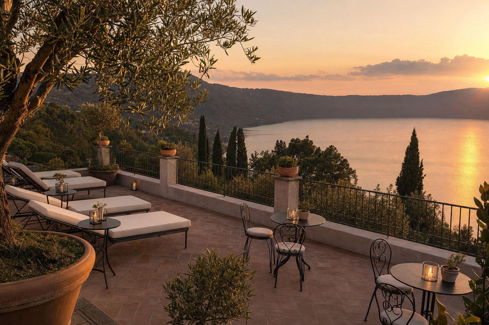

★★★★ · Terrazza panoramica
Hotel Castel Gandolfo
Hotel storico del centro con terrazza sui tetti affacciata sul Lago Albano. Camere eleganti, ristorante Bucci, servizio raffinato. Punto di riferimento del borgo.
€€€ · 135–223 €377 recensioni Google
Via de' Zecchini 27, Castel Gandolfo